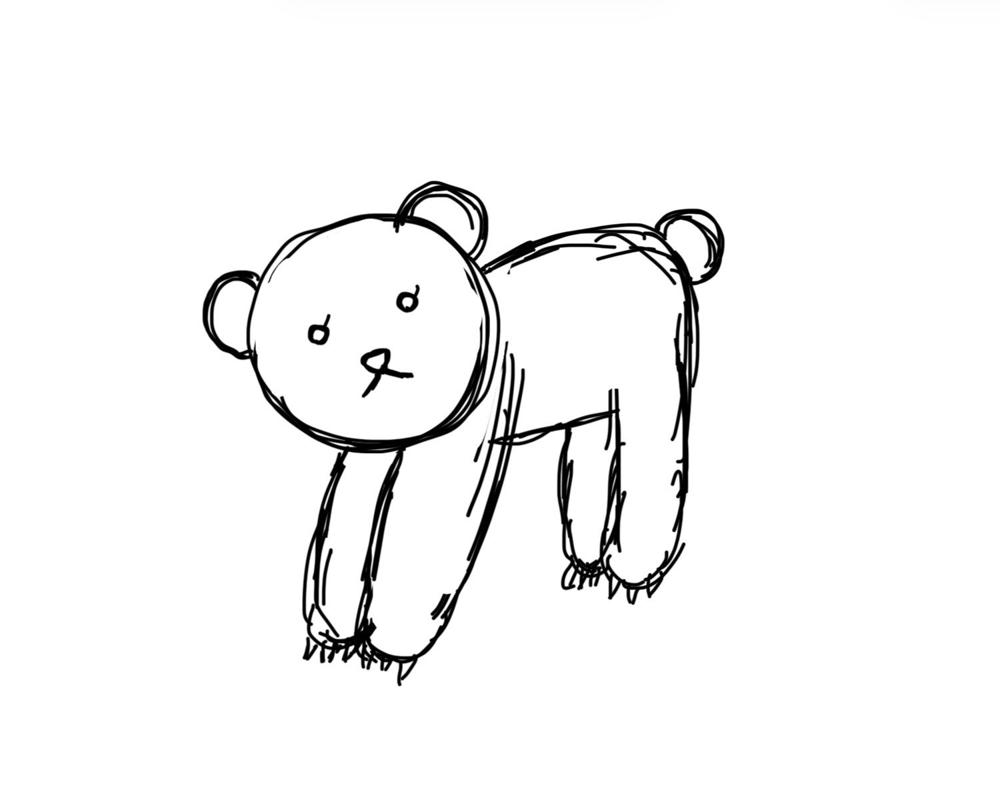
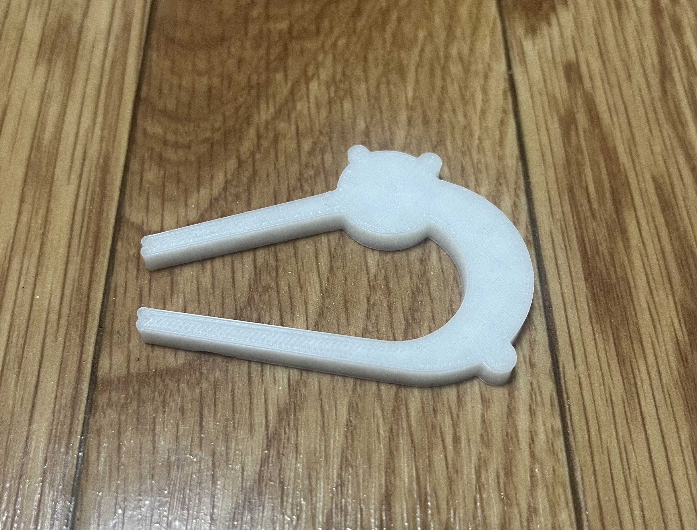

手書き構想スケッチ

完成したクリップ

設計ファイル
stlファイル
作品の説明
クマのぬいぐるみをイメージしてかわいく作りたかったため、構想スケッチからあまり形を変えないように手足で物を挟む想定で作りました。
かわいさを求め角を無くし、極力丸く作ることを意識した。（時間に余裕があれば、耳や尻尾は球体のようにしたかった）
なぜこの作品を作ったか
班で案を出し合った際にパペット型という案が出て、かわいくていい案だと思ったことがきっかけです。実際に作るものを決める際に、自分が
使いたくなるようなピンセットは何だろうと考え、かわいい方が持っているだけでうれしい気持ちになるなと思いました。そこでパペットとい
う案を採用しつつ、より形にしやすいぬいぐるみ型ピンセットをつくることにしました。
参考にしたサイト
Autodesk Fusion 入門｜初心者の方にもおすすめの講座